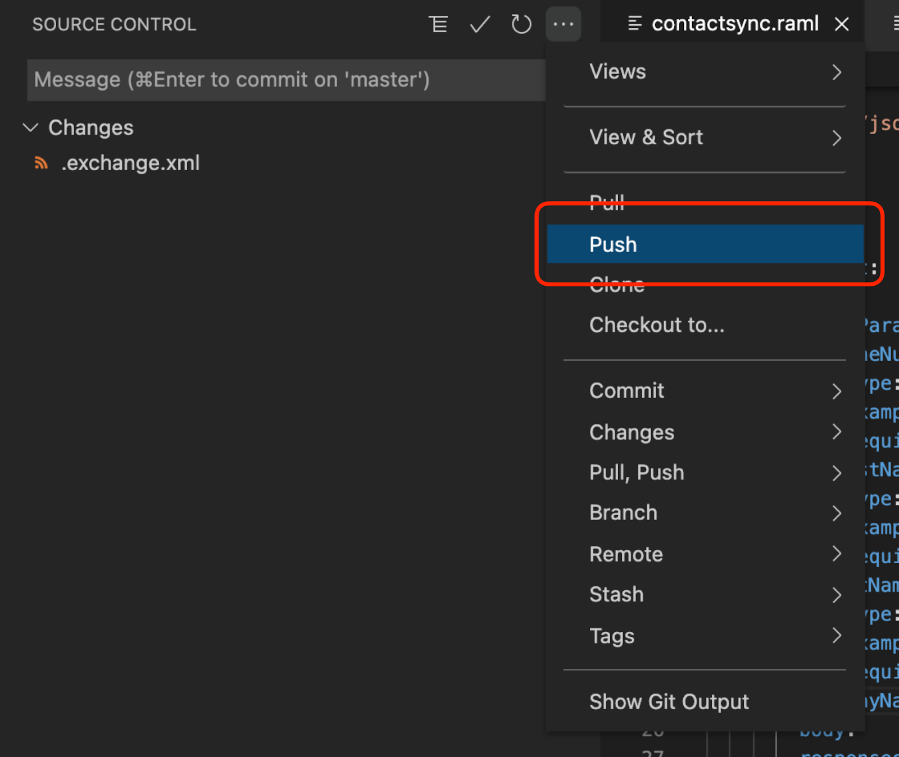
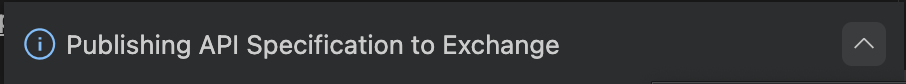

In this section we will cover designing APIs with Anypoint Code Builder.
What you'll build
In this codelab, we will be covering the life-cycle of an API. Specifically, you will
- Authenticate against the Anypoint Platform
- Create your first API from scratch
- Add dependencies to it
- Sync your API with Design Center (GIT operations)
- Import an API Project from Design Center
- Create Fragments from scratch
- Write API specifications with RAML or OAS
- View auto-generated, interactive documentation in the API console
- Build API specifications using prebuilt and reusable API fragments
- Validate designs with the Mocking Service
- Publish and share your API in Anypoint Exchange
What you'll learn
These steps will walk you through the test scenarios for Anypoint Code Builder. You will learn:
- How the complete API life-cycle works in Anypoint Code Builder
What you'll need
A working Anypoint Code Builder installation.
- Click in the activity bar, type
@installedand identify Mule DX API Component which centralizes all capabilities for Designing APIs
- Explore all tabs and details
Introduction
In this section we will learn how to use Anypoint Code Builder to edit an API Specification. For this purpose, we will first step up our working space and then we will create a new API project.
Requirements
If you have access to the "American Flights API" available in the Training Portal you can use it for this and the following sections. Otherwise, feel free to create your own specification. If you need a starting one, you can use the following:
Example API
#%RAML 1.0
title: Hello API
baseUri: http://localhost:8081
mediaType:
- application/json
version: v1
protocols:
- HTTP
/hello:
get:
displayName: Say Hello
responses:
"200":
body:
properties:
message:
example: Hello, world!
type: stringGetting Started
As mentioned in the requirements above, you can use the "American Flights API" from the fundamentals training for this exercise (that's where the screenshots are from) or create your own API / copy the example found in the Requirements section.
Setting up Anypoint Code Builder
Showing the Output Panel
If you haven't done so before, click View > Output
Alternatively, open the Output panel from the command palette (OSX: ⌘+⇧+P, Win: Ctrl+Shift+P or F1)
In Output, select Mule DX Server from the drop down menu:
Logging into the Anypoint Platform
Log into the Anypoint platform by double clicking Not logged in at the bottom right:
Enter your Anypoint username and hit return:
Enter your Anypoint password and hit return:
You should then see your username at the bottom right:
Click on View > Command Palette (OSX: ⌘+⇧+P, Win: Ctrl+Shift+P or F1)
If you are using the docker image, it will look like this (if you selected dark mode):

Type MuleSoft to list all commands available
Select Mulesoft: Create a Project and then select API Specification:
- Enter your credentials if not already done so
- Complete a valid Project name (invalid characters are not allowed) and then Project Description
- Select New API Specification (TIP: type
enterto move forward with the selected option) - Select RAML 1.0
- Select a location to store the new project - make sure the location exists
- You will see a confirmation at the bottom right
The creation process may take a little while, watch the messages in the output window. On the left panel, you will find the Package Explorer and Outline, in the center you will see the main editor. To open the API Console, click on the left icon (icon row on the top right):
A notification will appear at the bottom of the screen, the Mocking Service is turned on by default (this will be used in next steps)
Designing your API
You can now start designing your API, using ctrl+space for auto completion:
Look around the environment and note the
- Open Editors
- Project structure
The current version of the API Editor supports the following specification types:
- Raml 1.0
- Raml 0.8
- OpenApi 2.0
- OpenApi 3.0
Other key features include:
- Outline and Minimap
- Syntax Highlighting, similar to Design Center
- Code completion based on API specification
- Code folding/unfolding
- Hovering over elements to get additional information
- Validations based on API Specs and context
- Goto definitions
- Syntax validations
Validations run on the fly showing issues in red in the Editor, Minimap, Package Explorer and Outline.
If you haven't done so yet, click on the Computer Icon on the right top section to view auto-generated, interactive documentation in the API Console
Syncing your changes with Design Center
Note that the Mocking Service status indicator has changed: it is now warning about local changes not yet pushed. These changes must be synced with VCS to test them with the Mocking Service:
Click on the MS status indicator or the Source Control - Pending Changes which will present a number with the amount of local changes:
Click the + button to stage the changes:
You can click on the file to view differences with the VCS (sync with Design Center)
Enter a commit message and confirm using the ✓ check button (OSX: ⌘+Enter)
Open the Source Control menu by clicking on the three dots (...) and select the Push option:

You have successfully synchronized your changes with Design Center - congratulations! In the next section, we will take a look at using the Mocking Service to test the API.
To test your newly created API, first open the API console then click on the GET resource to begin
Click on the Try it button on the right-hand side and select or add any parameters, if necessary
Press Send and see results in the API Console, as follows. If your API has any examples, you should see that as the result of the invocation
You have finished this section! In the next walkthrough we will learn how you add request and response details using pre-built and reusable API fragments.
Introduction
In this section we will add existing dependencies from Anypoint Exchange.
Requirements
You will need to have an API Library that can be imported from Anypoint Exchange.
Getting Started
Open the Command palette (OSX: ⌘+⇧+P, Win: Ctrl+Shift+P or F1) and select "MuleSoft: Add Fragment dependency from Exchange"
Enter the name of the fragment you want to import. If you are following the example from Training, start typing the name of your dependency, e.g. "American Flight"
If a dependency is found, Anypoint Code Builder will list all the available versions that can be found in Anypoint Exchange. Select the correct dependency and then select the project to add the dependency to, as shown below
If the dependency has been correctly added, you will see the message "Dependencies added to POM"
The dependency is now also shown In the Explorer view: you will find the assets downloaded - but not editable - as shown below:
You can repeat the steps above to add any other dependency to this or other projects. Note that you can also see the dependencies under the Project Dependencies view on the left-hand side panel:
Back in the main editor, you can now continue with your API design. Start by adding a types root-level element - as shown below - using auto complete, enter a name for the library and add the full path of the dependency:
If you are using the Training library, you can return a array of AmericanFlight objects as the return data type for the /flights:get resource, as follows:
If your library has any examples, you can add these in the same way as shown above. After you have finished with your changes, remember to commit and push the changes.
Finally, check out the Mocking Service again: when we press Send, we can now see the proper results:
Congratulations on finishing this section! In the next one, we will learn how to publish your specification to Anypoint Exchange in Anypoint Code Builder.
Introduction
In this section we will publish an API created with Anypoint Code Builder to Anypoint Exchange.
Requirements
You will need
- An API project created in Anypoint Code Builder to publish
- Make sure the Output view is open - you can do this by opening the Command palette (OSX: ⌘+⇧+P, Win: Ctrl+Shift+P or
F1) and selecting Focus on Output View.
Getting Started
Open the Command palette (OSX: ⌘+⇧+P, Win: Ctrl+Shift+P or F1) and select the option MuleSoft Publish
Enter a valid Project Name (invalid characters will be rejected) or press enter to select a suggested one. Set a valid Artifact ID (again, invalid characters will be rejected) and a valid Asset Version (and again, invalid characters will be rejected) - Anypoint Code Builder will suggest a version based on the latest published one found in Anypoint Exchange.
Finally, enter an API Version. Afterwards, you should see the "Publishing API Specification to Exchange" appear on the screen

You will be able to see the progress of this task if you select the Mule DX Server task in the Output View. A notification will also be shown when the publishing process is complete:
Congratulations! You just finished another section. In our last section for this set of use-cases, we will learn how to import an existing API specification from Anypoint Exchange.
Introduction
In this section we will learn how to import an existing API specification from Anypoint Exchange.
Requirements
You will need to have an API specification published in Anypoint Exchange that can be imported into Anypoint Code Builder.
Getting Started
Go to Design Center in the Anypoint Platform and open an existing project

In Anypoint Code Builder, click on File > New Window to open a new tab
Open the Command palette (OSX: ⌘+⇧+P, Win: Ctrl+Shift+P or F1) and search MuleSoft Import and select the option MuleSoft: Import API Specification Project
If you are not already logged into the Anypoint Platform, enter both your username and password to login; afterwards you should see the API you previously opened in Design Center in the list of available items
Finally, choose the API you would like to import. The API specification will then be ready for editing, as shown below.
You have reached the end of this walkthrough - congratulations! You can now go back and take a look at the other available code labs for Anypoint Code Builder. If you have any questions or feedback, please send an email to... ?